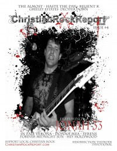

Jonah33
|  |
| 2007 Christian Rock Report |
Media coverage:
- Jul 2004 in CCM "Insider: Studio Buzz"
- Mar 2006 in HM "Jonah33", by Sam Farries
- May 2006 in Group "Culture: Ministry and Media: Jonah33", by Bryan Belknap
- 2007 in Christian Rock Report "Interview: Jonah33", by Laura C. Romesburg
- Sep 2007 in HM "Jonah33", by Matt Conner
Albums & reviews:
2003: Jonah33
- Jul 2003 in YouthWorker, by Dave Urbanski
- Jul 2003 in HM, by Kern County Kid
- 2005 in Christian Guitarist & Bassist, by Bill Vande Giessen
- Mar 2006 in HM, by John J. Thompson
- Mar 2006 in YouthWorker, by Dave Urbanski
- 2007 in Christian Rock Report
- 2007 in Christian Rock Report

© 2011 CMnexus. Last updated December 2020. Contact: editor -AT- cmnexus -DØT- org About